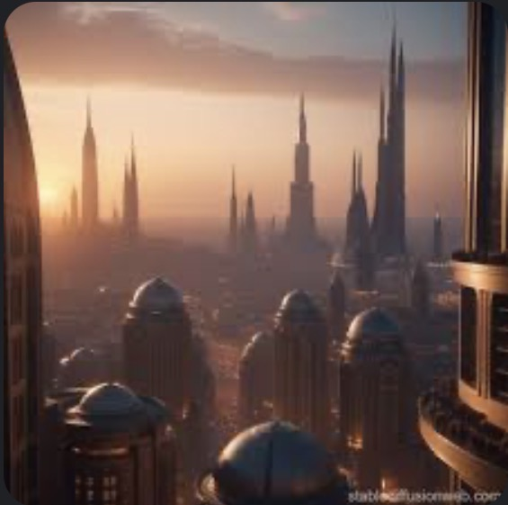
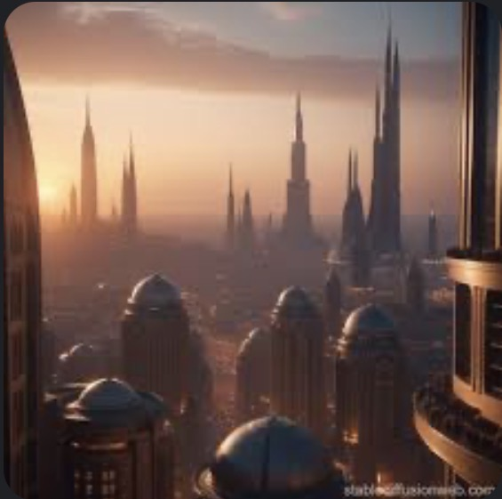

„Möge die Macht mit dir sein.“
Entdecke berühmte Planeten aus der Galaxis weit, weit entfernt.
 


Von Jedi-Meistern bis Sith-Lords – hier findest du alle bekannten Figuren und ihre Verbindungen.
Von Podracern bis zu imperialen Walkern – entdecke legendäre Fahrzeuge des Star Wars-Universums.
Erfahre mehr über die faszinierenden Spezies aus allen Ecken der Galaxis.
Erlebe die Star Wars-Saga noch einmal – mit Trailern und Beschreibungen.
Von der Millennium Falcon bis zum Todesstern – hier dreht sich alles um die mächtigsten Schiffe der Galaxis.